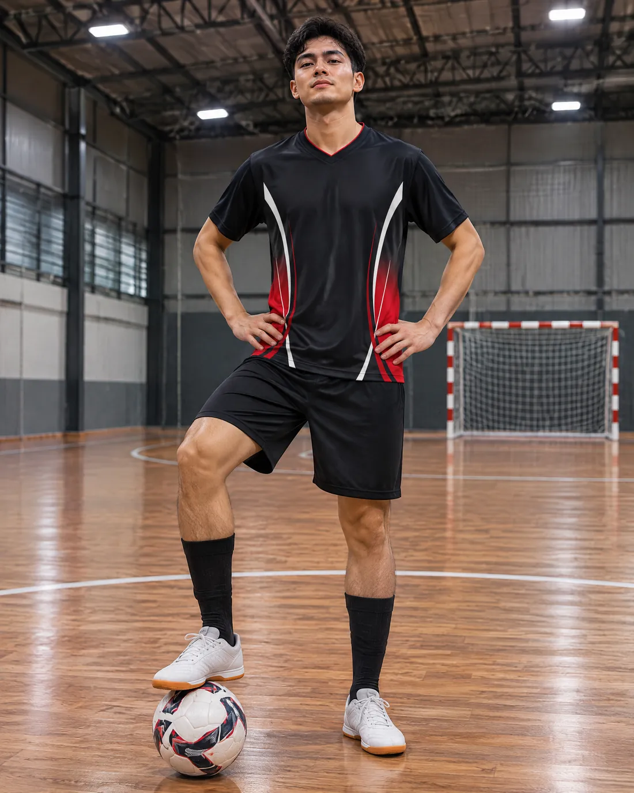

Equipaciones de fútbol sala personalizadas
Camiseta y pantalón para vuestro equipo de fútbol sala, diseñados con vosotros. Escudo, patrocinador, nombre y dorsal incluidos, con envío a España.
- Escudo y patrocinador
- Nombre y dorsal de cada jugador
- IVA y envío a España
- Boceto para aprobar antes de pagar
- Desde 10 camisetas, en las tallas que queráis

Para jugar en pista
En fútbol sala la equipación se ve de cerca: la grada está a dos metros y el dorsal tiene que leerse a la primera. Elegid colores con contraste, que se distingan bien de los de vuestra liga, y un portero de otro color.
Diseñada desde cero para vuestro equipo
Nos contáis la idea: colores, estilo, lo que queráis que lleve. Os preparamos una propuesta con vuestro escudo y no se fabrica nada hasta que la aprobáis. Si queréis cambiar algo, se cambia.
Empezad el diseño aquí: elegís una base, la giráis en 3D y nos dejáis la idea.
¿Preferís un modelo ya hecho?


Ver el catálogo completo o buscar por los colores de vuestro equipo.
La equipación del portero
El portero necesita un color distinto al del resto. Os la preparamos en otro color del mismo diseño o con otro modelo.
Cómo se hace el pedido
- Elegís modelo y color. Apuntáis la plantilla con nombre, dorsal y talla, y subís el escudo y el logo del patrocinador.
- Os mandamos el boceto por WhatsApp. Hasta aquí no se paga nada.
- Lo aprobáis y pagáis desde el enlace de vuestro pedido. Si queréis cambiar algo, nos lo decís antes.
- Fabricamos y enviamos. Contad con menos de 20 días laborables desde la aprobación.
Antes de decidir
- Cómo elegir la equipación de tu equipo: colores, portero, dorsales y tallas.
- Nombres para equipos de fútbol, si aún no tenéis.
- Qué incluye y cómo se pide, paso a paso.
Diseñar la nuestra Preguntar por WhatsApp
Preguntas frecuentes
¿Qué incluye la equipación?
Camiseta y pantalón, con escudo, patrocinador, nombre y dorsal. No incluye medias.
¿Podemos pedir otro color para el portero?
Sí, en otro color del mismo diseño o con otro modelo.
¿Hay pedido mínimo?
Sí, 10 camisetas por pedido.
¿Puedo ver la equipación antes de pagar?
Sí. Os mandamos un boceto con vuestro escudo por WhatsApp y solo se paga cuando lo aprobáis.
¿Qué tallas hay?
De la S a la 4XL de adulto, como las equipaciones de primera división. No hay tallas de niño.